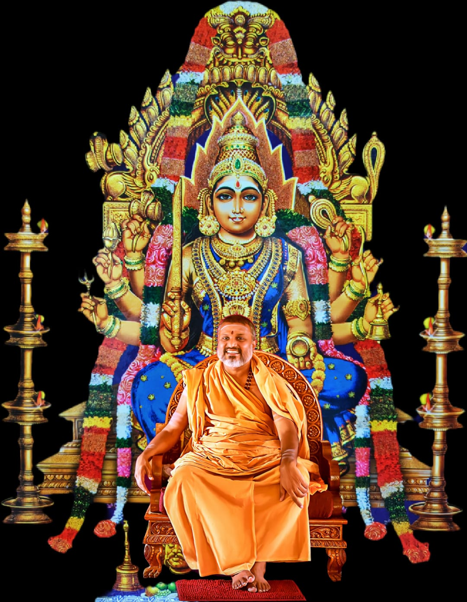

"Protect Me O Mother, I Have None but Thee.
I Surrender Myself At Thy Lotus Feet"
Devi Sri Samayapuram MahaMariamman
Sri Samayapuram Mariamman is considered as the most powerful form of Shakthi. The Goddess who is the better half of Shiva is one of the most powerful of all Gods and Goddesses. Mariamman is the sister of Lord Vishnu. She is believed to be a form of Kaali, and is also known as Mahamaayi or Seethala Gowri.
The Goddess Sri Samayapuram MahaMariamman (also known as Samayapuram Ambika) is an incarnation of the Goddess Parvati, the Divine Goddess who exudes power and is worshipped as the creator of life's forces.
The Blessing of Ashtabhuja
Mariamman blesses her devotees with "Ashta Bhujam" or her eight arms, which represent her many powers, the likes of which are not found anywhere else. Like a Mother, she knows exactly what her devotees need and is always there to fulfill their needs at the appropriate time. That is why she is called "Samayapuram Mariamman".
The Legend of the Goddess
She is the epitome of ferocity. Having fought the formidable demon Mahishasura single-handedly, she was blazing with energy and destructive power and took to a 28-day penance at Samayapuram, on the banks of river Cauvery.
After the penance, she emerged as a Deity of power and compassion, qualities that her devotees seek in equal measure even today. The Devi had chosen the very location of this temple for her penance after the mighty battle which made her the all-encompassing epitome of benevolence, compassion and power.
About Our Esteemed Guru
Sri Sadhasiva Puri Bhagavat Padacharya Swami Sri Sureshwara Acharya
Madathipathy of Sri Samayapuram Mariamman Temple
"Right Faith in God and Right Confidence in Yourself is the way to Live a Life"
— Swami Sri Sureshwara AcharyaAn ardent devotee of Goddess Sri Samayapuram MahaMariamman and a follower of the pedagogy of Adi Shankaracharya, our Respected Swamiji believes in selflessly serving the needy in order to live a pious life.
Swamiji's vision to set up this glorious temple dedicated to the Devi Ashtabhuja (Goddess with eight arms) is based on the belief of spreading knowledge amid the positive aura of this location, where devotion & worship go hand in hand with education and service to the needy.
"When the world is at peace, can we attain peace of mind. That, is the truest essence of life!"
— Swami Sri Sureshwara Acharya